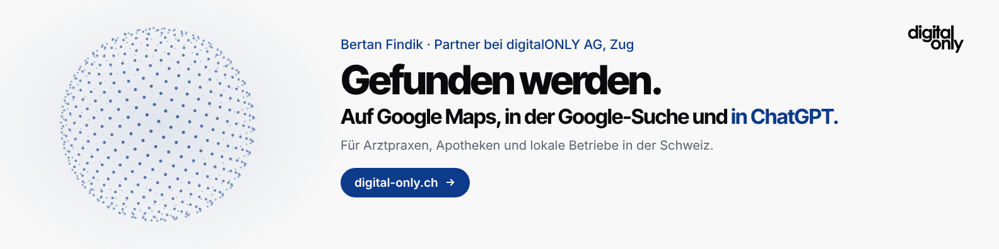

LinkedIn-Profil · Stand 24. November 2026
Bertan Findik
Partner, digitalONLY AG, Zug. Kopierfertige Texte in der Reihenfolge, die am meisten bringt.

{…} ist ein Platzhalter: nur mit echten, freigegebenen Angaben füllen. Alle Texte sind durch den Humanizer gelaufen.
Nichts davon ist bei LinkedIn gespeichert, jeder Abschnitt wird von Hand eingefügt.

Titelbild 1584 × 396 (Datei banner-bertan.png). Unten links bleibt Platz für das Profilfoto.
1Headline, eine Variante wählen
A · mit Aussendienst-Erfahrung
Arztpraxen, Apotheken und lokale Betriebe in der Schweiz auf Google Maps, in der Google-Suche und in ChatGPT sichtbar machen | Partner bei digitalONLY AG, Zug | Früher selbst im Werbe-Aussendienst
196 Zeichen
B · mit Kontaktweg
Mehr Anrufe aus Google Maps für Praxen, Apotheken und KMU | Google-Profil, KI-Sichtbarkeit, Google Ads | Partner bei digitalONLY AG, Zug | Kontakt über digital-only.ch
167 Zeichen
C · sobald die Zahl feststeht
{Zahl} Google-Profile betreut | Lokale Betriebe in der Schweiz werden auf Google Maps und in KI-Antworten gefunden | Partner bei digitalONLY AG | Seit 2021 im Gespräch mit KMU
175 Zeichen
2Info
Die ersten zwei Sätze sind alles, was man vor «mehr anzeigen» sieht. Humanizer 85/100, bestanden.
Ihre Praxis hat gute Bewertungen, und trotzdem klingelt das Telefon nicht öfter? Oft liegt es nicht an der Website, sondern daran, wie Ihr Betrieb auf Google Maps und in ChatGPT auftaucht.
Ich war ab 2021 selbst im Aussendienst und habe KMU Werbung und Verzeichnis-Einträge verkauft. Ich kenne diese Gespräche von der anderen Seite des Tisches. Ehrlich gesagt hat danach selten jemand nachgeschaut, wie viele Anrufe der Vertrag wirklich gebracht hat.
Heute mache ich es umgekehrt.
Bei digitalONLY in Zug sorgen wir dafür, dass lokale Betriebe gefunden werden. Konkret heisst das: ein gepflegtes Google-Unternehmensprofil mit den richtigen Kategorien und echten Fotos, einheitliche Firmendaten, damit auch ChatGPT und Gemini Sie empfehlen können, Google Ads mit einem Radius, der zu Ihrem Einzugsgebiet passt, und auf Wunsch eine Website, die für die Suche gebaut ist.
Für wen? Arztpraxen, Apotheken und Physiotherapien, dazu Handwerk und Gastro. Leute ohne Marketingabteilung, die wollen, dass das Telefon klingelt.
Bevor ich etwas empfehle, schaue ich mir Ihre eigenen Zahlen aus dem Google-Profil an. Anrufe zuerst. {Beleg: z. B. «Bei einer Apotheke in Zürich kamen innert {Zeitraum} {Zahl} % mehr Anrufe über Google Maps.»}
Wo steht Ihr Betrieb heute? Schreiben Sie mir hier eine Nachricht oder melden Sie sich über digital-only.ch.
1341 Zeichen
3Im Fokus, drei Elemente
- Bester Beitrag: «3 Fragen an jeden Werbeverkäufer» (Entwurf in der Zentrale), nach dem Posten anheften.
- Beleg: Fallbeispiel mit echter Zahl als Link oder PDF, sobald ein Kunde die Nennung freigegeben hat.
- Kontakt: Link auf die Kontaktseite von digital-only.ch.
4Berufserfahrung
Partner · digitalONLY AG · Zug · seit {Monat Jahr}
Mit der Unternehmensseite digitalONLY AG verknüpfen.
Bei digitalONLY in Zug verantworte ich {Bereich, z. B. Kundenberatung und Vertrieb}. Wir sorgen dafür, dass lokale Betriebe in der Schweiz auf Google Maps, in der Google-Suche und in KI-Antworten gefunden werden.
{Zahl} Google-Unternehmensprofile aufgebaut oder überarbeitet.
{Beleg mit Zahl, z. B. Anrufe über Google Maps bei einer Praxis innert drei Monaten: +{Zahl} %}
{Zahl} Google-Ads-Kampagnen für lokale Betriebe betreut.
429 Zeichen
Digital Marketing Consultant, Aussendienst · {Arbeitgeber} · 2021 bis {Jahr}
Beratung und Verkauf von Online-Verzeichnis-Einträgen und lokaler Werbung an KMU in {Region}, im Aussendienst direkt bei den Inhaberinnen und Inhabern.
{Zahl} Kundengespräche pro Woche, {Zahl} Neukunden pro Jahr.
{Zielerreichung oder Auszeichnung, falls vorhanden}
265 Zeichen
Den früheren Arbeitgeber neutral nennen, nie bewerten.
5Kenntnisse, die Top 3 anheften
Google Business Profile (Google-Unternehmensprofil) · Local SEO · Google Ads. Kunden und Kollegen um Bestätigung dieser drei bitten.
6Dienstleistungen
Suchmaschinenoptimierung (SEO), Suchmaschinenmarketing (SEM), Digitales Marketing, Webdesign. Region: Zug, Zürich, Schweiz.
7Kontakt und eigene URL
Eigene URL, z. B. linkedin.com/in/bertan-findik (falls frei). In den Kontaktinfos: Website digital-only.ch und die geschäftliche E-Mail-Adresse.
8Profilfoto
Gesicht füllt etwa 60 % des Bildes, Augen sichtbar, ruhiger Hintergrund, nicht älter als zwei Jahre.
9Empfehlungen: drei zufriedene Kunden anfragen
Grüezi Frau {Name}, darf ich Sie um eine kurze Empfehlung auf LinkedIn bitten? Am meisten hilft ein Satz dazu, was sich bei Ihnen konkret verändert hat, zum Beispiel bei den Anrufen über Google Maps. Zwei, drei Sätze reichen. Vielen Dank und freundliche Grüsse, Bertan Findik
275 Zeichen
10Punkte: was die Texte bringen und was noch fehlt
| Bereich | Max. | Nach dem Einfügen | Mit Zahlen, Empfehlungen, Aktivität |
|---|
| Headline | 12 | 10 | 11 |
| Info, erste zwei Zeilen | 10 | 9 | 9 |
| Info, Rest | 10 | 7 | 9 |
| Im Fokus | 8 | 3 | 8 |
| Titelbild | 6 | 6 | 6 |
| Profilfoto | 6 | 4 | 5 |
| Aktuelle Position | 10 | 5 | 9 |
| Berufserfahrung | 8 | 5 | 7 |
| Kenntnisse, Top 3 | 6 | 4 | 5 |
| Empfehlungen | 8 | 0 | 6 |
| Aktivität letzte 7 Tage | 10 | 0 | 10 |
| Kontakt und eigene URL | 6 | 6 | 6 |
| Total | 100 | 59 | 91 |
Schätzung nach der 100-Punkte-Rubrik des LinkedIn-Agents, ohne das heutige Profil gesehen zu haben. Profilfoto je nach Bild.
Noch offen
- Schreibweise des Namens (in der Zentrale: Findik)
- Genauer Titel und Startdatum bei digitalONLY
- Früherer Arbeitgeber, Dauer und was davon erzählt werden darf
- Echte Zahlen für Headline C, Info und Positionen, mit Kundenfreigabe
- Drei Empfehlungen, ein angehefteter Beitrag, Beiträge in den letzten sieben Tagen (Entwürfe liegen in der Zentrale)